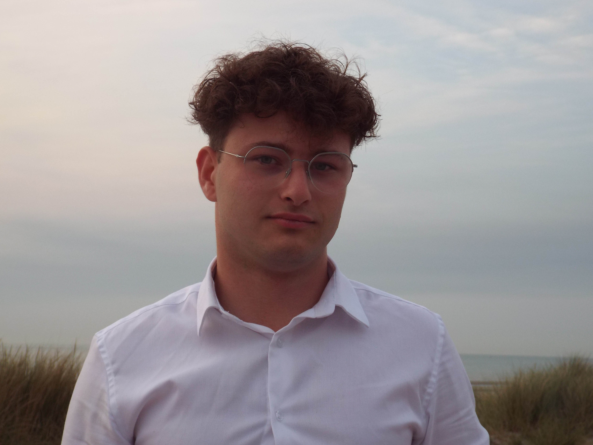

Emploi
Conseil régional
Collaborateur politique et conseiller en cybersécurité, intelligence artificielle et nouvelles technologies.
Antoine Wexsteen-Bézu. Étudiant en informatique à IPSSI Lille, passionné par le développement, la cybersécurité et les nouvelles technologies.
Consulter mon CV ↗CV disponible · version novembre 2025. Le parcours actualisé figure ci-dessous.

Je veux faire découvrir au plus grand nombre, et particulièrement aux responsables politiques, la réalité de l’informatique : ses usages concrets, son utilité pour les générations à venir et ce qu’elle change dans notre quotidien.
Mon ambition est aussi d’expliquer l’intelligence artificielle dans sa globalité : ses bénéfices et ses possibilités, mais aussi ses dangers, ses limites et les responsabilités qu’elle implique. Donner des clés pour comprendre, questionner et décider en connaissance de cause.
Collaborateur politique et conseiller en cybersécurité, intelligence artificielle et nouvelles technologies.
Stage pour un groupe politique : conception et développement d’un site intranet.
Sept stages au service informatique : assistance aux utilisateurs en autonomie, maintenance des serveurs, interventions sur les systèmes et mise à jour du parc matériel.
Création d’une association de production cinématographique avec des amis. Gestion associative, organisation de tournages et accompagnement des équipes. Fire Production a fermé en août 2026 et ne fait plus partie de mes projets actuels.
Emplois saisonniers en restauration au Centre Hospitalier de Dunkerque et expérience au restaurant Les Pieds dans l’Eau pour financer mes études.
Découverte du service informatique : maintenance, installation de postes et configuration des systèmes et du réseau interne.
HTML, CSS, JavaScript, Python, MySQL, WordPress. Des interfaces web aux bases de données.
Linux, adressage IPv4 et IPv6, VLAN, configuration de commutateurs, diagnostic et maintenance informatique.
Sensibilisation à la sécurité, protection des données et intérêt pour les usages de l’intelligence artificielle.
Premiere Pro, Photoshop, préparation de tournages, montage vidéo et coordination d’équipes.
Bachelor informatique, cybersécurité & développement IA.
Baccalauréat professionnel Systèmes numériques, option réseaux informatiques et systèmes communicants · Mention assez bien.
Le cinéma pour imaginer. Les voyages pour changer de perspective. La musique et le carnaval de Dunkerque pour partager. Et l’éloquence pour donner une voix aux idées.